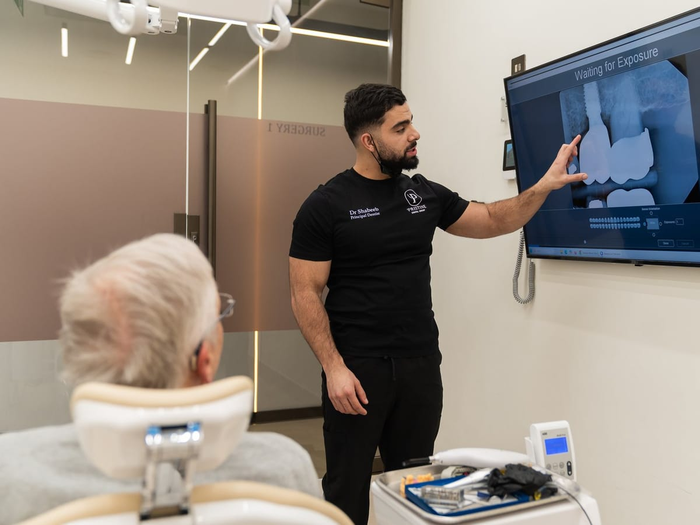
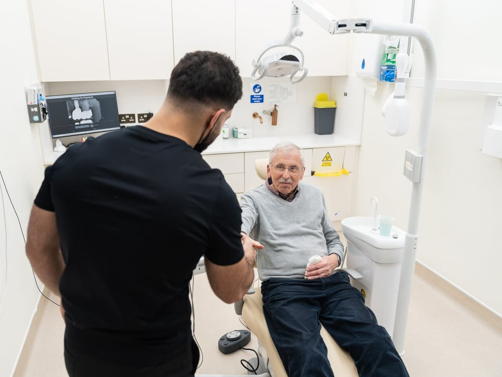
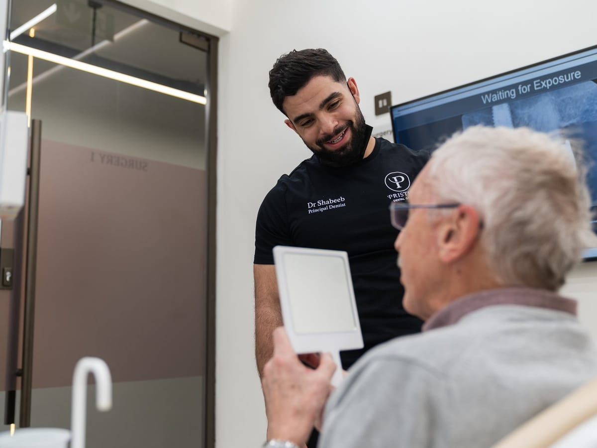
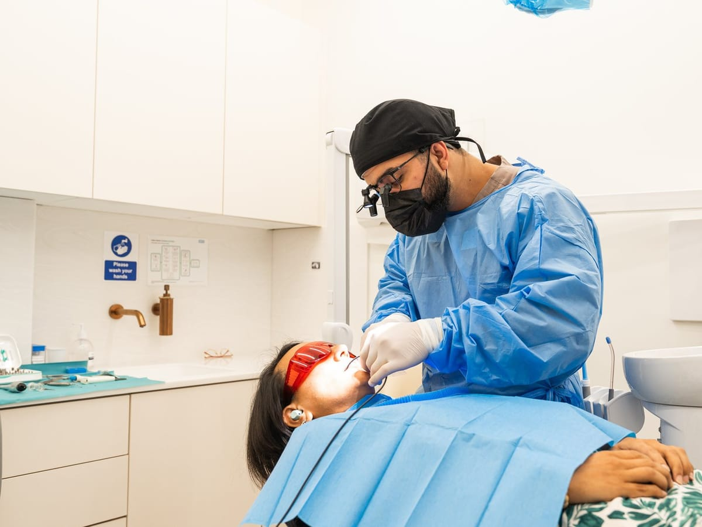
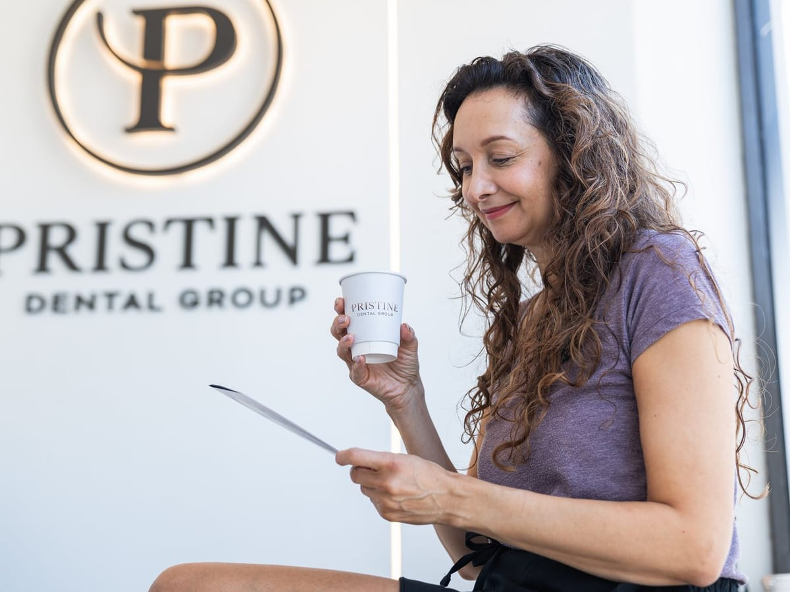
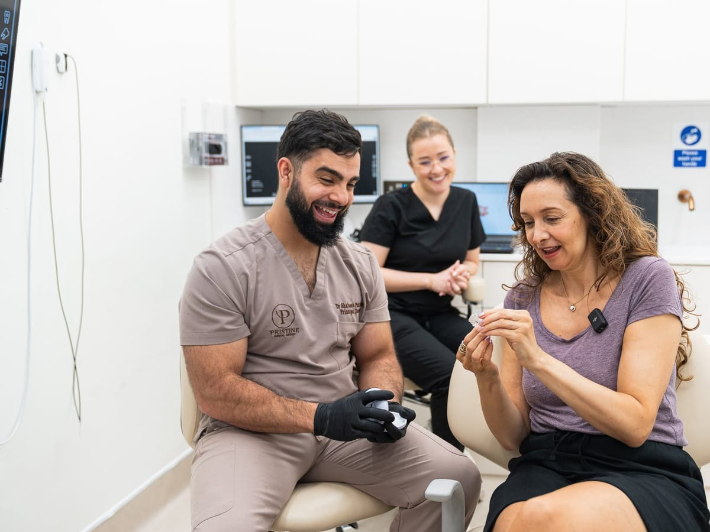
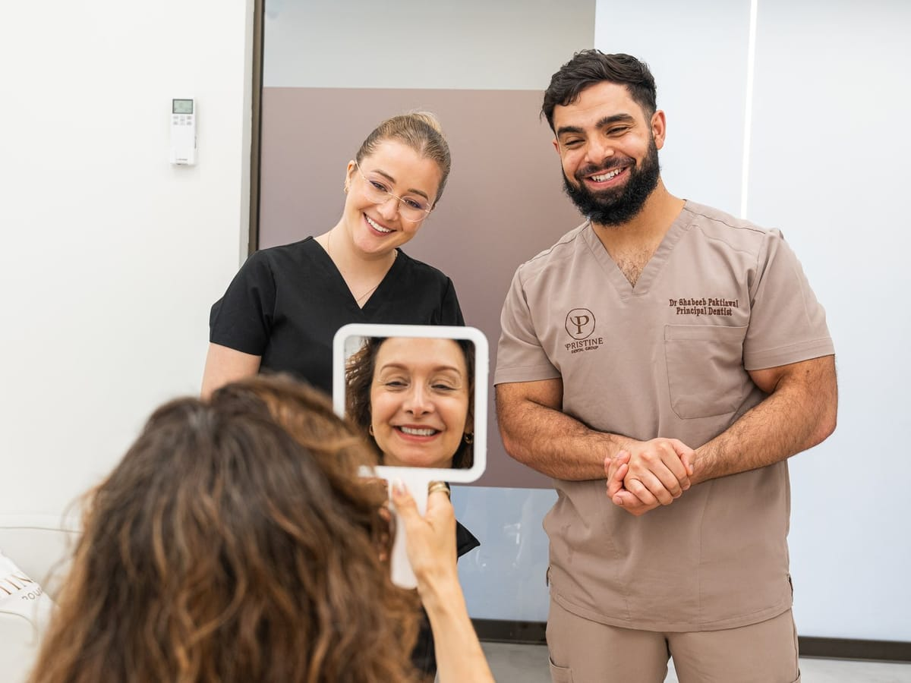
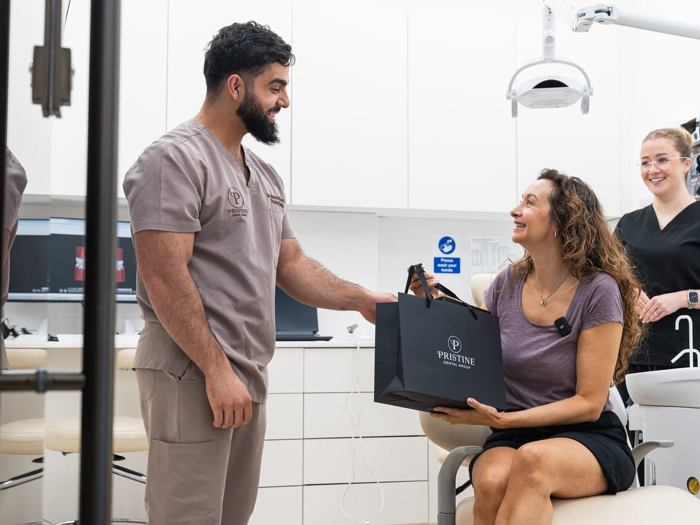
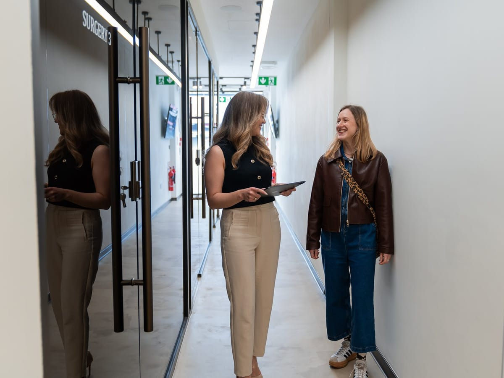
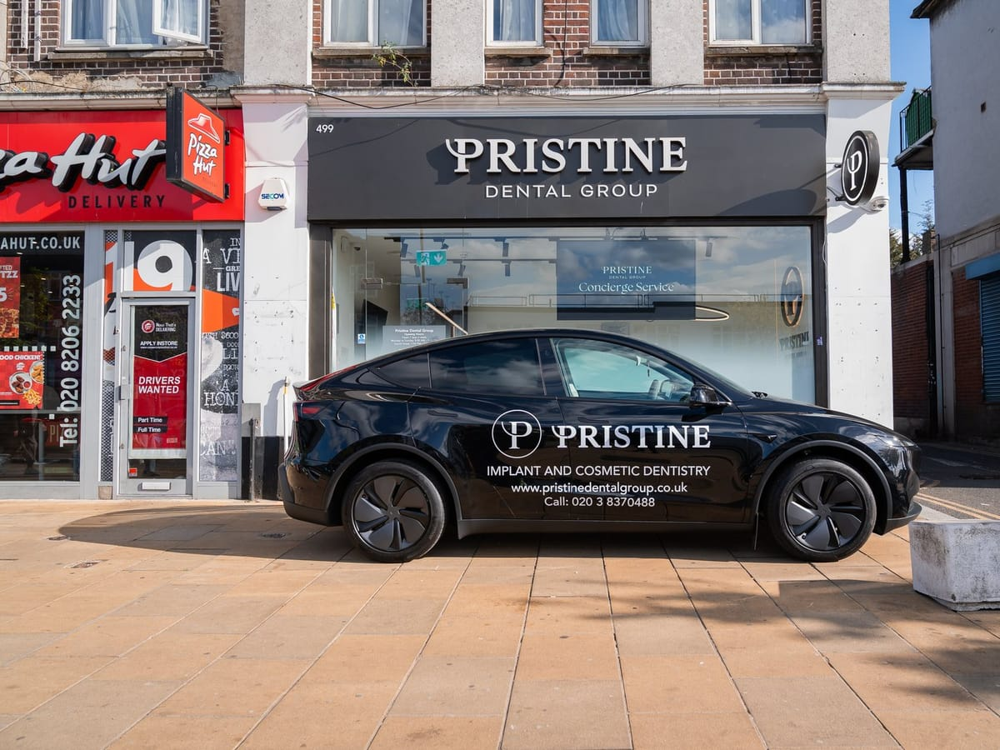

Dentures that move when you eat
Adhesive that fails halfway through a meal, and the constant low-level calculation about what is safe to order.
Full arch dental implants · Kingsbury, London
Four to six implants replace an entire top or bottom set of teeth, fixed permanently into your jaw. No adhesives. No slipping. Often placed in a single visit.
Limited appointments
Two quick questions, then your details. Takes about 30 seconds — worth £250, no obligation.
Our team will call you shortly to confirm your appointment. Please keep an eye on your phone.
Is this you?
Loose dentures and failing teeth rarely announce themselves. They just narrow life a little at a time, until the assumption becomes that this is simply how things have to be. It isn’t.
Adhesive that fails halfway through a meal, and the constant low-level calculation about what is safe to order.

Repeated repairs on teeth that keep letting you down, each one buying a little more time rather than fixing it.

Speaking carefully. Smiling with the mouth closed in photographs. Choosing where to sit at a family meal.
Your options
Every plan below includes your free consultation and CBCT scan. You leave your first appointment with a written price — not an estimate.
Upper or lower, on four to six implants
From £116 per month · 5-year 0% finance
Both arches restored together
From £225 per month · 5-year 0% finance
One tooth replaced, root and crown
From £13.25 per month · interest-free
Finance is subject to status and affordability checks. Full arch pricing assumes four to six implants per arch; your written plan confirms the exact number after your CBCT scan.
In their words
Dr Shabeeb made me feel completely comfortable from the start. My smile looks amazing now!
Sarah M.Patient
I can finally eat properly again. The implant feels just like a real tooth.
David H.Patient
Best decision I made. The results look natural and feel strong.
Rachel S.Patient
Dr Shabeeb explained everything clearly and made me feel completely at ease.
Emma W.Patient
My confidence has completely changed — I can smile again without worrying.
Lisa M.Patient
I was nervous about implants, but the process was smooth and comfortable.
Ahmed K.Patient
I was quite nervous, but the team were so kind and reassuring. The results exceeded my expectations.
Aisha K.Patient
Very professional service and amazing results. Highly recommend.
John P.Patient
Been told no before?
Most “complex” cases turn out to be plannable ones — the CBCT scan gives an honest answer either way, and there is no charge for asking.
Your visit
The scan is painless and over in minutes. It gives Dr Shabeeb an accurate picture of your bone structure — the thing that actually decides what is possible. Worth £250, free on this offer.
Your implants are positioned digitally before anything is placed. You leave with your options explained, a written fixed price, and your finance figures. No pressure, no surprise bill.
Four to six implants per arch, with your fixed bridge secured to them. Many patients leave with teeth the same day. Concierge pick-up is available on request.
Your team
Principal dentist · BDS, PG Dip Implant & Restorative Dentistry
“We understand how missing teeth affect daily life and confidence. Our goal is a long-lasting result that restores both function and how you feel about your smile.”
Dr Shabeeb leads every implant case at Pristine Dental Group, with advanced training in restorative dentistry and a particular interest in complex full arch work — including patients declined elsewhere. Every case is planned in 3D before treatment begins.
Inside the practice
Every implant is planned and placed here, at 499 Kingsbury Road.










What you get
Getting to us shouldn’t be the reason you put this off. A complimentary pick-up and drop-off service is available on request for consultation and treatment days.
Previously declined, existing bone loss, or a failed implant from another practice — these are the cases we plan for most often. Bring any scans or notes you already have.
Questions
Not necessarily. It is one of the most common assumptions about full arch treatment, and often it isn’t the case. Your CBCT scan shows which teeth are worth keeping and which are working against the result — Dr Shabeeb goes through that with you before anything is agreed.
In most cases, no — even where you have been told otherwise. Angling four to six implants using 3D planning makes the most of the bone you already have, which is precisely what avoids grafting in the majority of full arch cases. Your scan gives the definitive answer.
Yes. Complex and previously declined cases are a large part of what we do. The consultation and scan cost you nothing, and you get a straight answer either way — including if the honest answer is that implants are not right for you.
A single arch starts from £7,000 with the current £1,500 discount applied — around £116 a month on 5-year interest-free finance, subject to status. Your written fixed price is confirmed at your consultation, once the scan shows how many implants your case needs — and there are no hidden costs: every fee is in the written plan before treatment begins.
Not in the way most people fear. Placement is done under gentle local anaesthetic with high-precision technique — most patients say it feels similar to a tooth extraction, with mild soreness afterwards. Your bone and gum health are assessed beforehand so healing is predictable.
Placement is often completed in a single visit, and many patients leave the same day with a fixed set of teeth in place.
Implants are designed as a long-term solution and, cared for properly, routinely last many years. Longevity depends on oral hygiene, general health and regular reviews.
A CBCT scan, a suitability assessment with Dr Shabeeb, your options explained, and a written fixed price with finance figures before you leave. Nothing is booked on the day unless you want it to be.
Things come up — we simply ask for at least 24 hours’ notice so the slot can go to someone who needs it. Missed appointments or late cancellations may carry a fee for longer, high-demand slots.
Limited appointments
£1,500 off full arch implants, from £116 a month on 5-year interest-free finance, and a CBCT scan worth £250 included. The honest, no-pressure starting point.